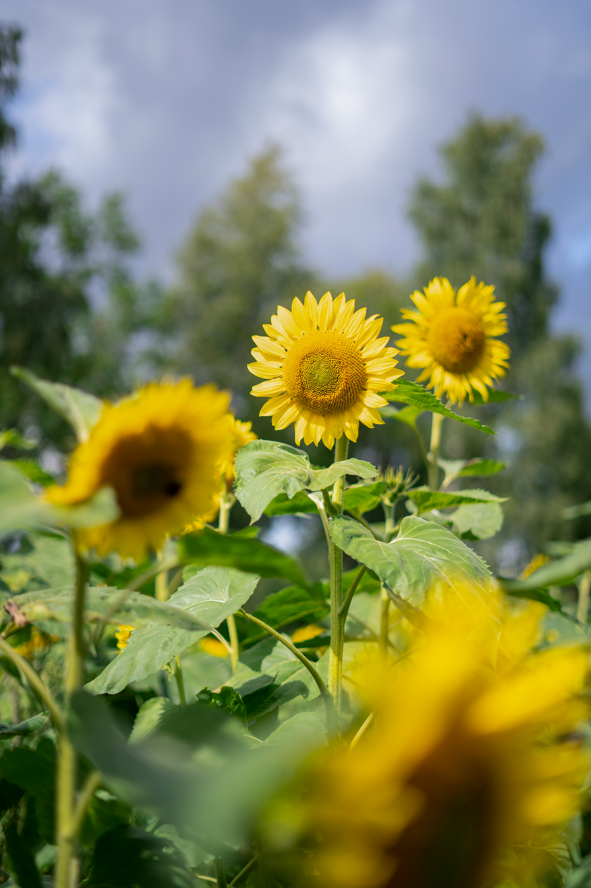

Year in the Apiary – Weather & Seasonal Beekeeping Calendar
How Weather Shapes Hive Management
Honey bees live in the same weather that we do, but they experience it very differently. A few degrees of temperature, a change in wind speed, or a spell of rain can make the difference between a busy foraging day and a clustered colony relying entirely on stored food. Understanding how weather and season work together is one of the most powerful tools a beekeeper can use.
This year-round beekeeping calendar is written with a cool, temperate climate in mind (such as much of the UK), but the principles apply wherever you keep bees. Always adjust your timing to suit your own weather, forage, altitude and micro-climate.
Weather Basics for Beekeepers
As a simple rule of thumb, bees fly confidently on calm, bright days with mild temperatures. When it is chilly, wet or windy, they stay at home and live off their stores. That means the weather forecast affects almost every beekeeping decision you make, including:
- Whether it is safe to open a hive without chilling brood
- How much natural forage is available on any given day
- When to feed syrup or fondant, and in what quantity
- When to carry out inspections, swarm control and queen assessments
- How urgently you need to strap, weight or move hives because of storms
Approximate Temperature Guide
Every colony is different, but these rough ranges are useful when reading the weather forecast. They are not hard limits, just practical working guides you can adapt to your own bees and conditions:
| Outside temperature | Bee activity | Beekeeper guidance |
|---|---|---|
| Below ~10 °C | Very little foraging, bees mostly clustered in the hive. | Avoid full inspections. Use “hefting” and entrance observations. Suitable for emergency checks only. |
| 10–14 °C | Short cleansing flights and light foraging in sunny, calm spells. | Only carry out brief, targeted checks if really needed. Keep brood exposure as short as possible. |
| 15 °C and above | Comfortable flying and foraging on calm days. | Reasonable conditions for normal inspections, swarm control and general hive management. |
| Hot weather (around 28 °C and above) | Bees fan at the entrance, beard on the front of the hive and seek water. | Ensure good ventilation and a safe water source. Avoid long inspections in the hottest part of the day. |
Important: This page is for guidance only. Weather, forage and nectar flows vary by region and each colony behaves differently. Always use your own judgement and experience, and follow any advice from your local beekeeping association, mentor or inspector.
Monthly Beekeeping & Weather Chart (Northern Hemisphere)
The chart below gives an overview of typical priorities and weather patterns through the beekeeping year for a cool, temperate climate. You can click through to each month’s dedicated page for more detailed tasks and checklists.
| Month | Typical focus | Weather & temperature notes | Hive & feeding considerations |
|---|---|---|---|
| January | Mid-winter survival | Often cold, frosty and wet. Daytime temperatures frequently below 10 °C. | No routine inspections. Heft hives; add fondant if light. Check straps, roofs and entrances after storms, snow or high winds. |
| February | Early brood rearing | Unsettled weather. Occasional mild days but still many cold snaps. | Brood rearing increases food demand. Continue with fondant if needed. Avoid opening the brood nest unless essential and conditions are calm and mild. |
| March | Spring build-up begins | More frequent days above 10 °C, but wind and showers are common. | On the warmest days, consider a quick inspection to assess brood pattern and stores. Emergency feeding may still be required if colonies are light after bad weather. |
| April | Strong brood expansion | Milder temperatures; some days suitable for full inspections. | Begin regular inspections in good weather. Ensure colonies have space for brood and nectar and watch for signs of congestion and early swarming. |
| May | Swarm season | Generally good flying weather, though heavy showers are still possible. | Carry out full inspections in settled weather. Apply swarm control methods, add supers and ensure plenty of space for nectar and brood. |
| June | Peak nectar flow | Long, warm days with excellent foraging when dry and calm. | Manage supers, continue to monitor swarming impulses and maintain good ventilation. Make sure colonies are strong and healthy for the main flow. |
| July | Honey production and heat | Often hot; bees may beard on the front of the hive. | Provide shade and ventilation where needed. Avoid long inspections in the hottest part of the day. Check water sources and continue to manage supers. |
| August | End of main flow & health checks | Warm but starting to cool at night. Drought or heavy rain can both affect forage. | Remove honey as appropriate. Assess colony strength and health, and plan late-summer treatments. Begin to think about winter stores and hive condition. |
| September | Autumn feeding begins | Cooler nights, shorter days and more unsettled weather. | Start autumn feeding with syrup while temperatures are still warm enough for bees to ripen and cap stores. Aim to build up sufficient winter food. |
| October | Preparing for winter | Increasingly cold and wet; many days unsuitable for inspections. | Finish syrup feeding early. Switch to fondant if colonies are still underweight. Check hive stands, roofs, entrances and insulation. Minimise disturbance to the brood nest. |
| November | Settling for winter | Frequent days below 10 °C and little or no forage. | No routine inspections. Heft hives on dry days, top up fondant if required and ensure hives are secure against wind, frost and wildlife. |
| December | Minimal disturbance | Cold, dark and often stormy. Bees remain clustered for long periods. | Leave colonies undisturbed except for urgent checks and post-storm inspections. Make sure entrances are clear and roofs and straps are intact. |
Hemisphere and Regional Differences
This “year in the apiary” is written for the Northern Hemisphere, where spring runs roughly from March to May and winter from December to February. In the Southern Hemisphere, the seasons are reversed, and even within one country, coastal and inland areas can be weeks apart in terms of flowering and temperature.
If you keep bees outside the UK or at higher altitude, shift the timings in this calendar forwards or backwards to match your own first blossoms, main nectar flow and usual winter length. Local beekeepers are often the best source of information about how the weather behaves in your area.
Key Seasonal Considerations for Hive Management
Weather is only one part of the picture. Your colony’s strength, health status and your beekeeping goals all influence what you should be doing each month. Use this page together with the more detailed monthly task lists for a complete view of the year in your apiary.
Core areas to monitor all year round
- Monitoring and managing pests such as Varroa mites and other hive threats
- Supporting queen health, brood pattern and temperament
- Checking honey stores before, during and after winter
- Managing brood expansion and providing space at the right time
- Carrying out regular hive inspections in suitable weather and keeping good records
Weather-Aware Inspection Tips
- Avoid opening hives on cold, wet or very windy days – especially when brood is present.
- Plan full inspections for calm, bright days when temperatures are comfortably into the mid-teens Celsius or higher.
- In marginal weather, keep inspections short and focused: check the essentials and close the hive promptly.
- After storms, snow or gales, carry out quick external checks to confirm stands, roofs and entrances are still sound.
Explore the Seasons in More Detail
Use the quick links below to dive deeper into each part of the beekeeping year. Every seasonal section links to the dedicated monthly pages so you can see what to prioritise in your apiary right now.
In the Northern Hemisphere...

